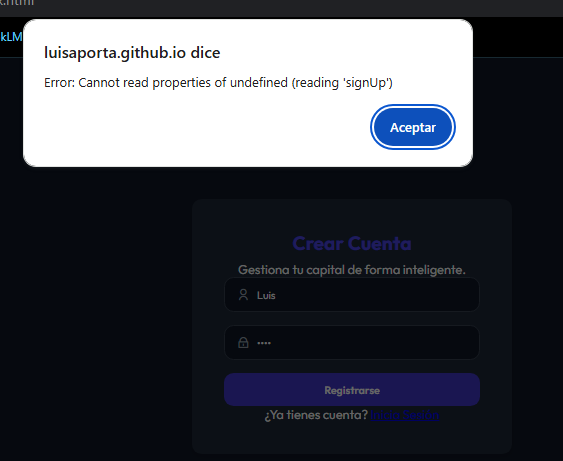
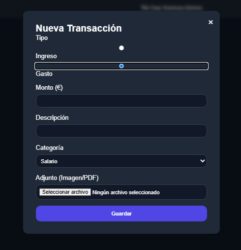
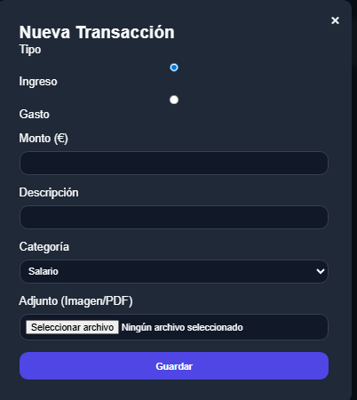
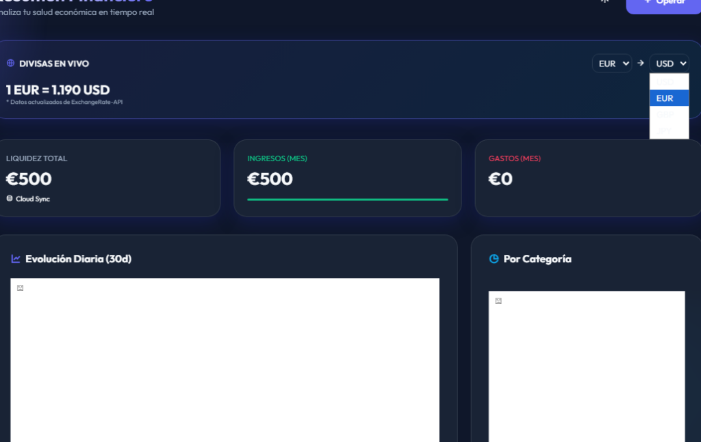

Historia y Resolución
Cómo transformamos prompts en una arquitectura financiera real
Hito 01: El Cimiento
v1.0 La Base Funcional
"Hazme una web de finanzas sencilla con login y Supabase para guardar mis ingresos y gastos.
Que se puedan subir fotos de los tickets."
Visión Técnica: En esta fase nos centramos en la infraestructura de datos.
Implementamos el esquema SQL en Supabase para manejar la persistencia y configuramos el
Storage para los archivos adjuntos. Fue una SPA (Single Page App) funcional pero con un
diseño aún estándar.
Supabase Auth
PostgreSQL
Vanilla JS

Hito 02: Arquitectura
v2.0 Refactorización MPA
"La app se está quedando pequeña. Sepárala en páginas distintas para el Dashboard, las
Transacciones y los Ajustes. Pon un menú lateral persistente."
Visión Técnica: Reorganizamos el proyecto de SPA a MPA (Multi-Page Application).
Creamos el núcleo
common.js para inyectar dinámicamente el Sidebar y gestionar
la sesión en todas las rutas. Esto permitió un escalado real de funciones sin colapsar el
DOM.
Multi-page Architecture
Modular JS
Sidebar Injection

Hito 03: Estética
v3.0 Premium Redesign
"Quiero que la app parezca futurista y de alta gama. Usa Glassmorphism, neones y añade
gráficas que me digan cómo va mi saldo día a día."
Visión Técnica: El gran salto visual. Implementamos un sistema de diseño basado en
**Glassmorphism** (backdrops con blur) y una paleta de colores neón balanceada. Integramos
Chart.js para procesar los datos de las transacciones y convertirlos en inteligencia
financiera visual.
Glassmorphism
Chart.js Integration
CSS Variables

Hito 04: Refinamiento
v4.0 Pulido y Conversión
"El formulario es soso, mejóralo. El eje Y de las gráficas no debe ir al infinito. Añade un
conversor de divisas dinámico y explícame todo el código."
Visión Técnica: Pulimos la UX con controles segmentados estilo iOS. Ajustamos el
algoritmo de renderizado de gráficas para mayor legibilidad y conectamos con
**ExchangeRate-API** para el conversor. Finalizamos con esta expansión masiva de la
documentación técnica.
External API
UX Segmented Controls
Documentation Hub
